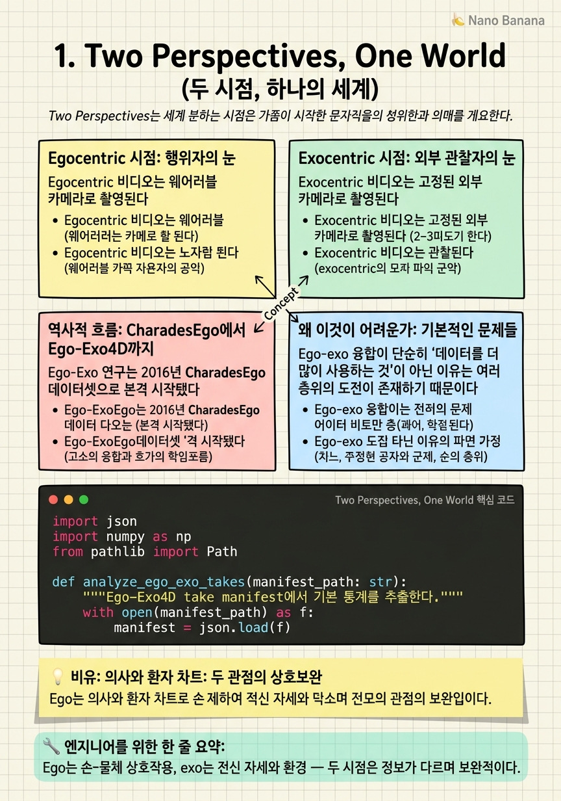

Two Perspectives, One World

🎯 학습 목표
- 1인칭(ego)과 3인칭(exo) 시점이 각각 어떤 정보를 포착하는지 정확히 설명할 수 있다
- 두 시점의 상호보완성을 실제 작업 예시로 논증할 수 있다
- ego-exo 연구의 역사적 흐름을 CharadesEgo → EPIC-Kitchens → Ego-Exo4D로 서술할 수 있다
- 이 분야가 단순한 '데이터 추가'가 아닌 구조적 문제를 다루는 이유를 설명할 수 있다
컴퓨터 비전에서 '시점(viewpoint)'은 단순한 카메라 위치가 아니다. 카메라를 어디에 다느냐는 무엇을 볼 수 있는가를 근본적으로 바꾼다. Egocentric(1인칭, ego) 카메라는 머리에 착용해 행위자의 시선을 직접 포착한다 — 손과 물체의 상호작용, 시선이 향하는 곳, 세밀한 작업의 세부 사항이 고해상도로 담긴다. Exocentric(3인칭, exo) 카메라는 외부 고정 위치에서 행위자를 관찰한다 — 전신 자세, 공간 내 이동 궤적, 주변 환경과의 관계가 보인다.
이 두 시점은 단순히 '같은 장면을 다른 각도에서 찍은 것'이 아니다. Ego-Exo4D 논문([CVPR 2024](https://arxiv.org/abs/2311.18259))은 이를 정확하게 표현한다:
> *"The first-person perspective captures the details of close-by hand-object interactions and the camera wearer's attention, whereas the third-person perspective captures the full body pose and surrounding environment context."*
이 말은 두 시점이 정보적으로 상호보완적이라는 뜻이다. 요리 장면을 상상해보자: ego 카메라는 칼이 채소를 써는 방식, 손의 그립, 칼날 각도를 보여주지만 전신은 보이지 않는다. Exo 카메라는 셰프의 어깨 자세, 발의 위치, 조리대와의 거리를 보여주지만 손-칼 상호작용의 세밀함은 흐릿하다. 두 시점을 합치면 비로소 완전한 이해가 가능하다.
하지만 이 보완성이 곧 '두 시점을 같이 쓰면 무조건 좋다'는 의미는 아니다. 이 강의의 핵심 주제 중 하나는 왜 naive하게 두 시점을 합치면 오히려 성능이 떨어지는가이다. 단순 데이터 병합이 실패하는 이유, 그리고 구조적으로 뷰를 정렬하고 전이하는 방법 — 이것이 2024-2026년 ego-exo 연구의 중심 문제다.
핵심 내용
Egocentric 시점: 행위자의 눈
Egocentric 비디오는 웨어러블 카메라로 촬영된다. 2024년 기준으로 가장 대표적인 기기는 Meta의 Project Aria 안경이다 — 8MP RGB 카메라, 두 개의 SLAM 카메라, IMU, 오디오 마이크가 통합된 리서치 기기다. 착용자의 눈높이에서 세상을 포착하기 때문에 카메라가 착용자의 움직임을 그대로 따라간다.
Ego 시점의 강점은 손-물체 상호작용(hand-object interaction, HOI)에 있다. 피아노 연주, 도구 수리, 요리 등 정밀한 손 기술이 필요한 작업에서 ego 카메라만이 그 세부 움직임을 포착할 수 있다. 또한 착용자의 시각적 주의(visual attention) 자체가 데이터에 반영된다 — 착용자가 무엇을 보고 있는지가 곧 카메라의 시야다.
Ego 시점의 약점은 자기 폐색(self-occlusion)과 자기 포함(self-exclusion)이다. 착용자 자신의 전신이 보이지 않고, 빠른 머리 움직임에 의한 모션 블러가 심하다. 배경은 끊임없이 움직이고, 시점 변화가 불규칙해서 시간적 일관성이 낮다.
EPIC-Kitchens ([2018](https://epic-kitchens.github.io/))는 순수 ego 비디오 데이터셋의 대표주자다. 100시간, 주방 환경, 55명의 참여자로 구성되어 있으며 행동 인식, 물체 검출, 예측 등 다양한 태스크를 지원한다. 하지만 exo 뷰가 없기 때문에 cross-view 연구에는 직접 활용하기 어렵다.
Exocentric 시점: 외부 관찰자의 눈
Exocentric 비디오는 고정된 외부 카메라로 촬영된다. 일반적인 스포츠 중계, 감시 카메라, 교육 영상이 모두 exo 시점이다. 기계학습 커뮤니티에서 exo 데이터는 훨씬 풍부하다 — YouTube 비디오, 영화, TV 쇼 등 대부분의 대규모 비디오 데이터가 exo 기반이다. 그 결과 사전학습된 비디오 모델들은 대부분 exo 분포에 최적화되어 있다.
Exo 시점의 강점은 전신 자세(full-body pose)와 공간 관계(spatial relationship)다. 행위자가 전신으로 보이기 때문에 걷기, 뛰기, 넘어지기 등 몸 전체를 쓰는 동작 인식에 유리하다. 복수의 사람 간의 상호작용도 포착할 수 있고, 환경의 전체 구조(방의 레이아웃, 도구 위치 등)가 프레임에 담긴다.
Exo 시점의 약점은 원거리에서의 세부 손실과 고정 뷰의 제약이다. 멀리서 촬영할수록 손-물체 상호작용의 세밀한 움직임이 흐릿해진다. 또한 카메라가 고정되어 있어 행위자가 이동하면 가려지거나 프레임 밖으로 나갈 수 있다.
중요한 현실적 불균형이 있다: 알고리즘은 exo 태스크에서는 잘 작동하지만 ego 태스크에서는 성능이 현저히 낮다. CVIU 2025 리뷰([arXiv:2410.20621](https://arxiv.org/abs/2410.20621))는 이를 명시적으로 지적한다 — exo 비디오 데이터의 압도적인 양 때문에 모델 편향이 형성되어 있다. 이 격차를 메우는 것이 ego-exo 연구의 핵심 동기 중 하나다.
역사적 흐름: CharadesEgo에서 Ego-Exo4D까지
Ego-Exo 연구는 2016년 CharadesEgo 데이터셋으로 본격 시작됐다. 이 데이터셋은 동일한 가정 내 활동을 ego와 exo 두 시점으로 동시 촬영한 최초의 대규모 paired 데이터셋 중 하나다. 하지만 규모가 제한적이었고 (약 68.8시간), 동기화 정밀도가 낮았으며, 활동 범위가 가정 내 일상 동작으로 제한됐다.
이후 Assembly101 (2022), LEMMA 등 특정 도메인(조립 작업, 요리 등)에 집중한 paired 데이터셋들이 등장했다. 이들은 정밀한 시간 동기화와 더 세밀한 어노테이션을 제공했지만 범용성이 부족했다.
Ego-Exo4D (CVPR 2024 Oral, [arXiv:2311.18259](https://arxiv.org/abs/2311.18259))는 이 분야의 패러다임을 바꿨다. 1,286시간, 740명의 참여자, 13개 도시, 123개의 자연적 장면 컨텍스트. 피아노 연주, 농구, 요리, 자전거 수리, 댄스 등 다양한 기술 기반 활동(skilled human activities)을 커버한다. Aria 안경 + 4~5대의 시간 동기화된 GoPro라는 멀티뷰 캡처 리그는 지금도 이 분야의 표준 설정이다.
2025-2026년에는 벤치마크의 질적 도약이 이루어졌다. 단순 행동 인식을 넘어 cross-view semantic reasoning (EgoExoBench, [arXiv:2507.18342](https://arxiv.org/abs/2507.18342))과 cross-view memory reasoning (EgoExoMem, [arXiv:2605.18734](https://arxiv.org/abs/2605.18734))을 측정하는 벤치마크가 등장하면서 현재 모델들의 근본적 한계가 드러나고 있다.
왜 이것이 어려운가: 기본적인 문제들
Ego-exo 융합이 단순히 '데이터를 더 많이 사용하는 것'이 아닌 이유는 여러 층위의 도전이 존재하기 때문이다.
도메인 갭(domain gap): Ego와 exo 비디오는 시각적으로 매우 다르게 보인다. 모션 패턴, 배경 통계, 객체 크기, 카메라 움직임 등이 근본적으로 다르다. 같은 '요리하기' 동작이더라도 ego에서는 클로즈업된 손과 냄비가 보이고, exo에서는 주방 전체와 셰프 전신이 보인다. 이 분포 차이를 극복하지 못하면 하나의 모델이 두 시점 모두를 잘 이해하기 어렵다.
시간적 정렬(temporal alignment) 문제: Ego와 exo 카메라는 물리적으로 동기화되어 있더라도, 의미론적으로 같은 '순간'을 공유하지 않을 수 있다. 행위자의 ego 관점에서 중요한 순간(물체를 집는 순간)이 exo 카메라에서는 폐색되어 보이지 않을 수도 있다.
부합 어노테이션(correspondence annotation)의 어려움: 어느 ego 픽셀이 어느 exo 픽셀에 대응하는지를 레이블링하는 것은 극히 어렵고 비싸다. 카메라 파라미터와 3D 재구성 없이는 픽셀 레벨 대응을 자동으로 구하기 어렵다. 이것이 자기지도 학습(self-supervised learning) 방법들이 중요한 이유다.
뷰 비대칭(view asymmetry): Ego와 exo는 정보의 양과 종류가 다르기 때문에 단순 앙상블이나 concatenation이 효과적이지 않다. 어떤 태스크에는 ego가 더 유용하고, 어떤 태스크에는 exo가 더 유용하다 — 이 적응적 가중치 결정이 아직 해결되지 않은 문제다.
💡 비유로 이해하기
Ego와 exo의 관계를 생각하는 좋은 비유는 의사(exo)와 환자 일지(ego)의 관계다. 의사는 외부에서 환자를 관찰한다 — 걸음걸이, 자세, 피부색, 움직임의 이상함을 포착한다. 환자는 자신의 내부를 직접 경험한다 — 통증의 위치, 구체적인 감각, 언제 어떤 상황에서 악화되는지.
두 관점 모두 진단에 필요하다. 의사만의 관찰로는 환자가 경험하는 내면의 세부 사항을 놓친다. 환자의 자기 보고만으로는 외부에서 보이는 객관적 패턴을 놓친다. 좋은 진단은 두 정보를 통합하는 것이다 — 하지만 두 정보를 단순히 나란히 놓는다고 해서 저절로 통합되지 않는다. 의사는 두 관점을 의미 있게 연결하는 해석의 틀이 필요하다.
Ego-exo 연구에서의 도전도 똑같다. 두 카메라 스트림을 단순히 같이 입력으로 넣는다고 해서 모델이 두 시점을 의미 있게 융합하지 않는다. 구조적인 정렬, 대응점 학습, 적응적 융합 — 이것들이 필요한 '해석의 틀'이다.
💻 코드 예시
간단한 예시로, Ego-Exo4D 데이터를 불러와 기본적인 통계를 확인하는 코드다. 실제 연구 시작점에서 데이터 분포를 파악하는 것이 중요하다.
import json
import numpy as np
from pathlib import Path
def analyze_ego_exo_takes(manifest_path: str):
"""Ego-Exo4D take manifest에서 기본 통계를 추출한다."""
with open(manifest_path) as f:
manifest = json.load(f)
takes = manifest["takes"]
print(f"Total takes: {len(takes)}")
# 각 take의 ego vs exo 카메라 수 분포
ego_counts = []
exo_counts = []
for take in takes:
n_ego = sum(1 for cam in take["cameras"] if cam["is_ego"])
n_exo = sum(1 for cam in take["cameras"] if not cam["is_ego"])
ego_counts.append(n_ego)
exo_counts.append(n_exo)
print(f"Ego cameras per take: mean={np.mean(ego_counts):.2f}, ")
print(f" min={min(ego_counts)}, max={max(ego_counts)}")
print(f"Exo cameras per take: mean={np.mean(exo_counts):.2f}, ")
print(f" min={min(exo_counts)}, max={max(exo_counts)}")
# 활동(scenario) 분포
scenarios = {}
for take in takes:
s = take.get("scenario_uid", "unknown")
scenarios[s] = scenarios.get(s, 0) + 1
print(f"\nUnique scenarios: {len(scenarios)}")
print(f"Top 5: {sorted(scenarios.items(), key=lambda x: -x[1])[:5]}")
return {"ego": ego_counts, "exo": exo_counts}
# 실제 실행 (다운로드 후)
# stats = analyze_ego_exo_takes("ego_exo4d/takes.json")
is_ego 필드로 ego와 exo 카메라를 구분한다. Ego-Exo4D는 take당 1개의 Aria(ego)와 4-5개의 GoPro(exo)가 기본 구성이다. 실제 연구에서는 이 manifest를 통해 캡처 설정의 분포를 먼저 이해하고, 어떤 take에서 모든 카메라가 유효한 데이터를 가지고 있는지 필터링하는 것이 첫 번째 단계다.
🏭 현업에서의 평가
✅ 시니어가 보는 것
- 두 시점의 정보 상호보완성을 구체적인 태스크 예시로 설명하는 능력
- 왜 exo에서 잘 작동하는 모델이 ego에서 성능이 낮은지 도메인 갭 관점에서 설명
- Ego-Exo4D의 캡처 설정(Aria + GoPro 리그)을 이해하고 그 설계 의도를 파악
- naive multi-view training의 실패 원인을 데이터 분포 관점에서 설명
⚠️ 레드 플래그
- '두 시점을 concatenate하면 무조건 좋다'는 단순한 믿음
- ego와 exo의 차이를 단순히 '카메라 위치 차이'로만 설명하는 경우
- Ego-Exo4D 이전의 연구 흐름을 모르는 경우
🎤 예상 인터뷰 질문
- Ego-Exo4D 데이터셋에서 synchronized ego-exo pair를 훈련 데이터로 사용할 때 어떤 augmentation 전략이 적절한가?
- 같은 활동을 ego와 exo 두 시점으로 촬영한 경우, 모델이 두 시점 모두에서 잘 동작하도록 훈련하려면 어떤 loss function을 설계해야 하는가?
- EPIC-Kitchens에서 사전학습한 모델을 Ego-Exo4D의 exo 비디오에 파인튜닝할 때 예상되는 문제는 무엇인가?
✨ 핵심 요약
정보 상호보완성
Ego는 손-물체 상호작용, exo는 전신 자세와 환경 — 두 시점은 정보가 다르며 보완적이다.
도메인 갭의 존재
알고리즘은 exo에서는 잘 작동하지만 ego에서는 성능이 낮다 — 데이터 분포 편향 때문이다.
Naive Fusion의 함정
두 시점 데이터를 단순히 합쳐 훈련하면 오히려 단일 시점보다 성능이 낮아질 수 있다.
Ego-Exo4D가 표준
1,286시간, 740명, 13개 도시의 synchronized 멀티뷰 데이터셋이 2024년 이후 표준 벤치마크다.
역사적 맥락
CharadesEgo(2016) → Assembly101(2022) → Ego-Exo4D(2024) 순으로 규모와 다양성이 급격히 성장했다.
구조적 정렬의 필요성
의미 있는 ego-exo 융합을 위해서는 단순 데이터 병합이 아닌 대응점 학습과 적응적 정렬이 필요하다.
8개 응용 도메인
행동 인식, 신원 인식, 추적, 합성, 어포던스, 지식 전이, 공동 표현, 로보틱스/VR/VLM 응용까지 확장됐다.